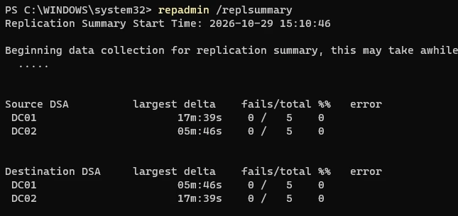
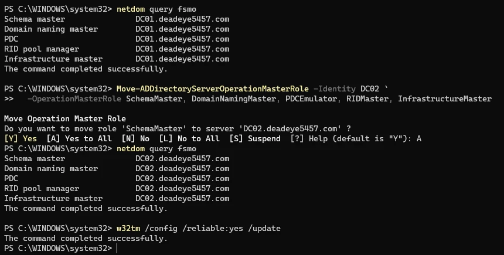
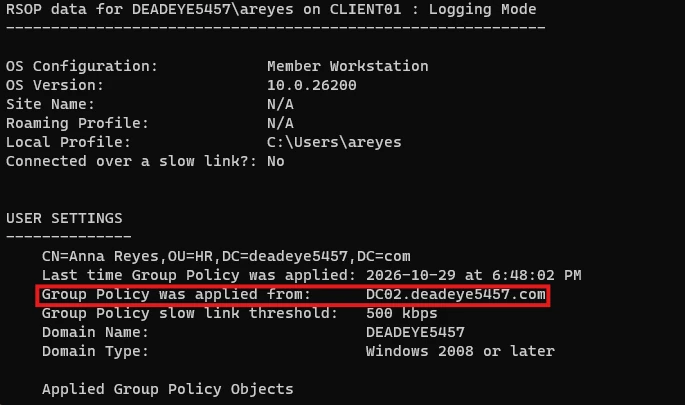
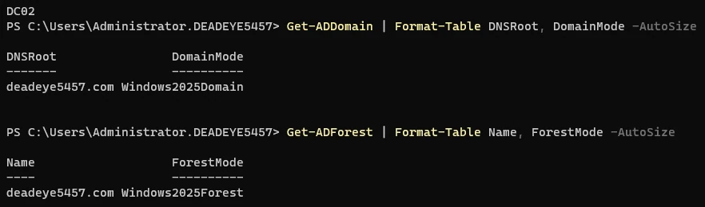

Active Directory lab: a scripted build, then a Server 2016 to 2025 migration
I built an Active Directory domain from PowerShell scripts, then migrated it side by side from Windows Server 2016 to Server 2025. Each step had a check that had to pass before the next one started, and every claim links to a screenshot or a transcript.
- Build
- PowerShell, rebuilt from the repo
- Migrate
- Side by side, all five FSMO roles
- Verify
- repadmin · dcdiag · scream test
- Schema
- 87 to 91, forest at Windows2025
- Log
- 11 problems, each with root cause and proof
- Host
- 3 VMs on a 16 GB laptop, VMware Workstation
Open the case fileClose the case fileDecisions, proof and what broke
Decisions
Side by side, not in place
It is slower than an in-place upgrade and much safer. The old domain controller stays up as a fallback until the new one has proven itself through replication checks, a role transfer and a scream test.
Snapshots in coordinated pairs
Once two domain controllers are replicating, reverting only one to an older snapshot causes a USN rollback, which silently breaks replication. From DC02's promotion onward, both were shut down and snapshotted together.
Proof
Four of the twelve migration steps. Each image opens the full, uncropped screenshot on GitHub.
Replication healthy in both directions
Zero failures out of five for each domain controller, as a source and as a destination, before any role was moved.
PS> repadmin /replsummary

All five FSMO roles moved from DC01 to DC02
Queried the role holders, transferred all five in one command, then queried again to confirm every role sits on the Server 2025 domain controller.
PS> netdom query fsmo

Scream test passed with DC01 powered off
With the original domain controller switched off, a domain user logged on at the client and Group Policy was applied from DC02.
PS> gpresult /r

Domain and forest raised to Windows2025
A one-way step, so it came last, after DC01 was demoted and the new domain controller had come through a crash.
PS> Get-ADDomain | Format-Table DNSRoot, DomainMode

See all twelve steps with their proof in the README
What broke
Three of the eleven problems in the troubleshooting log.
-
DC02 blue-screened in the middle of the migration
- Symptom
dcdiagshowed DC02 had rebooted from bugcheck0x7A. Its second parameter,0xc0000185, is an I/O device error, which pointed at the host's storage and not at Windows.- Cause
- The VMs live on an external SSD over USB. The drive dropped out for a moment and DC02's virtual disk disappeared mid-read.
- Fix
- Turned off USB power management for the port, connected the SSD directly, then checked the Directory Service log for database corruption events before continuing. There were none.
-
dcdiag reported a wall of failures after promotion
- Symptom
- DFSREvent, KccEvent, Services, SystemLog and ObjectsReplicated failed across both domain controllers.
- Cause
- Mostly noise from running in a VM, with two real issues mixed in: replication had not caught up, and DC01's firewall blocked remote event-log reads.
- Fix
- Sorted every failure into noise or real, fixed the two real ones, and proved it with
repadmin, the SYSVOL share and event 4604 before moving any roles.
-
A clean demotion still left stale DNS
- Symptom
- After DC01 was demoted, the
_msdcsdelegation still named it as the only name server. - Cause
- The delegation was created with the forest on DC01, and nothing updated it when DC02 was promoted.
- Fix
- Added a delegation to DC02, removed the DC01 record, and confirmed that no NS or SRV record references the old domain controller.
Read all eleven in the troubleshooting log
Verify before every irreversible step, and keep a way back.I didn't move roles until replication was proven, didn't demote until the scream test passed, and didn't raise the functional level until the new domain controller had come through a crash.
Worked with Active Directory Domain Services, DNS, Group Policy, FSMO roles, repadmin, dcdiag, DFSR and SYSVOL, Windows Server Backup, PowerShell, VMware Workstation and Git.